᾿Εὰν ὦσι δύο εὐθεῖαι, τμηθῇ δὲ ἡ ἑτέρα αὐτῶν εἰς ὁσαδηποτοῦν τμήματα, τὸ περιεχόμενον ὀρθογώνιον ὑπὸ τῶν δύο εὐθειῶν ἴσον ἐστὶ τοῖς ὑπό τε τῆς ἀτμήτου καὶ ἑκάστου τῶν τμημάτων περιεχομένοις ὀρθογωνίοις.
῎Εστωσαν δύο εὐθεῖαι αἱ Α, ΒΓ, καὶ τετμήσθω ἡ ΒΓ, ὡς ἔτυχεν, κατὰ τὰ Δ, Ε σημεῖα· λέγω, ὅτι τὸ ὑπὸ τῶν Α, ΒΓ περιεχομένον ὀρθογώνιον ἴσον ἐστὶ τῷ τε ὑπὸ τῶν Α, ΒΔ περιεχομένῳ ὀρθογωνίῳ καὶ τῷ ὑπὸ τῶν Α, ΔΕ καὶ ἔτι τῷ ὑπὸ τῶν Α, ΕΓ.
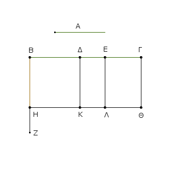
῎Ηχθω γὰρ ἀπὸ τοῦ Β τῇ ΒΓ πρὸς ὀρθὰς ἡ ΒΖ, καὶ κείσθω τῇ Α ἴση ἡ ΒΗ, καὶ διὰ μὲν τοῦ Η τῇ ΒΓ παράλληλος ἤχθω ἡ ΗΘ, διὰ δὲ τῶν Δ, Ε, Γ τῇ ΒΗ παράλληλοι ἤχθωσαν αἱ ΔΚ, ΕΛ, ΓΘ.
῎Ισον δή ἐστι τὸ ΒΘ τοῖς ΒΚ, ΔΛ, ΕΘ. καί ἐστι τὸ μὲν ΒΘ τὸ ὑπὸ τῶν Α, ΒΓ· περιέχεται μὲν γὰρ ὑπὸ τῶν ΗΒ, ΒΓ, ἴση δὲ ἡ ΒΗ τῇ Α· τὸ δὲ ΒΚ τὸ ὑπὸ τῶν Α, ΒΔ· περιέχεται μὲν γὰρ ὑπὸ τῶν ΗΒ, ΒΔ, ἴση δὲ ἡ ΒΗ τῇ Α. τὸ δὲ ΔΛ τὸ ὑπὸ τῶν Α, ΔΕ· ἴση γὰρ ἡ ΔΚ, τουτέστιν ἡ ΒΗ, τῇ Α.
καὶ ἔτι ὁμοίως τὸ ΕΘ τὸ ὑπὸ τῶν Α, ΕΓ· τὸ ἄρα ὑπὸ τῶν Α, ΒΓ ἴσον ἐστὶ τῷ τε ὑπὸ Α, ΒΔ καὶ τῷ ὑπὸ Α, ΔΕ καὶ ἔτι τῷ ὑπὸ Α, ΕΓ.
᾿Εὰν ἄρα ὦσι δύο εὐθεῖαι, τμηθῇ δὲ ἡ ἑτέρα αὐτῶν εἰς ὁσαδηποτοῦν τμήματα, τὸ περιεχόμενον ὀρθογώνιον ὑπὸ τῶν δύο εὐθειῶν ἴσον ἐστὶ τοῖς ὑπό τε τῆς ἀτμήτου καὶ ἑκάστου τῶν τμημάτων περιεχομένοις ὀρθογωνίοις· ὅπερ ἔδει δεῖξαι.
᾿Εὰν εὐθεῖα γραμμὴ τμηθῇ, ὡς ἔτυχεν, τὸ ὑπὸ τῆς ὅλης καὶ ἑκατέρου τῶν τμημάτων περιεχόμενον ὀρθογώνιον ἴσον ἐστὶ τῷ ἀπὸ τῆς ὅλης τετραγώνῳ.
Εὐθεῖα γὰρ ἡ ΑΒ τετμήσθω, ὡς ἔτυχεν, κατὰ τὸ Γ σημεῖον· λέγω, ὅτι τὸ ὑπὸ τῶν ΑΒ, ΒΓ περιεχόμενον ὀρθογώνιον μετὰ τοῦ ὑπὸ ΒΑ, ΑΓ περιεχομένου ὀρθογωνίου ἴσον ἐστὶ τῷ ἀπὸ τῆς ΑΒ τετραγώνῳ.
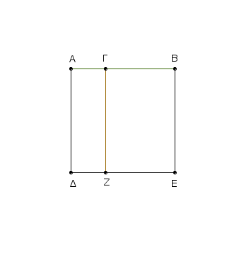
᾿Αναγεγράφθω γὰρ ἀπὸ τῆς ΑΒ τετράγωνον τὸ ΑΔΕΒ, καὶ ἤχθω διὰ τοῦ Γ ὁποτέρᾳ τῶν ΑΔ, ΒΕ παράλληλος ἡ ΓΖ.
῎Ισον δή ἐστὶ τὸ ΑΕ τοῖς ΑΖ, ΓΕ. καί ἐστι τὸ μὲν ΑΕ τὸ ἀπὸ τῆς ΑΒ τετράγωνον, τὸ δὲ ΑΖ τὸ ὑπὸ τῶν ΒΑ, ΑΓ περιεχόμενον ὀρθογώνιον· περιέχεται μὲν γὰρ ὑπὸ τῶν ΔΑ, ΑΓ, ἴση δὲ ἡ ΑΔ τῇ ΑΒ· τὸ δὲ ΓΕ τὸ ὑπὸ τῶν ΑΒ, ΒΓ· ἴση γὰρ ἡ ΒΕ τῇ ΑΒ. τὸ ἄρα ὑπὸ τῶν ΒΑ, ΑΓ μετὰ τοῦ ὑπὸ τῶν ΑΒ, ΒΓ ἴσον ἐστὶ τῷ ἀπὸ τῆς ΑΒ τετραγώνῳ.
᾿Εὰν ἄρα εὐθεῖα γραμμὴ τμηθῇ, ὡς ἔτυχεν, τὸ ὑπὸ τῆς ὅλης καὶ ἑκατέρου τῶν τμημάτων περιεχόμενον ὀρθογώνιον ἴσον ἐστὶ τῷ ἀπὸ τῆς ὅλης τετραγώνῳ· ὅπερ ἔδει δεῖξαι.
᾿Εὰν εὐθεῖα γραμμὴ τμηθῇ, ὡς ἔτυχεν, τὸ ὑπὸ τῆς ὅλης καὶ ἑνὸς τῶν τμημάτων περιεχόμενον ὀρθογώνιον ἴσον ἐστὶ τῷ τε ὑπὸ τῶν τμημάτων περιεχομένῳ ὀρθογωνίῳ καὶ τῷ ἀπὸ τοῦ προειρημένου τμήματος τετραγώνῳ.
Εὐθεῖα γὰρ ἡ ΑΒ τετμήσθω, ὡς ἔτυχεν, κατὰ τὸ Γ· λέγω, ὅτι τὸ ὑπὸ τῶν ΑΒ, ΒΓ περιεχόμενον ὀρθογώνιον ἴσον ἐστὶ τῷ τε ὑπὸ τῶν ΑΓ, ΓΒ περιεχομένῳ ὀρθογωνίῳ μετὰ τοῦ ἀπὸ τῆς ΒΓ τετραγώνου.
᾿Αναγεγράφθω γὰρ ἀπὸ τῆς ΓΒ τετράγωνον τὸ ΓΔΕΒ, καὶ διήχθω ἡ ΕΔ ἐπὶ τὸ Ζ, καὶ διὰ τοῦ Α ὁποτέρᾳ τῶν ΓΔ, ΒΕ παράλληλος ἤχθω ἡ ΑΖ.
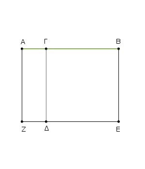
ἴσον δή ἐστι τὸ ΑΕ τοῖς ΑΔ, ΓΕ· καί ἐστι τὸ μὲν ΑΕ τὸ ὑπὸ τῶν ΑΒ, ΒΓ περιεχόμενον ὀρθογώνιον· περιέχεται μὲν γὰρ ὑπὸ τῶν ΑΒ, ΒΕ, ἴση δὲ ἡ ΒΕ τῇ ΒΓ· τὸ δὲ ΑΔ τὸ ὑπὸ τῶν ΑΓ, ΓΒ· ἴση γὰρ ἡ ΔΓ τῇ ΓΒ· τὸ δὲ ΔΒ τὸ ἀπὸ τῆς ΓΒ τετράγωνον·
τὸ ἄρα ὑπὸ τῶν ΑΒ, ΒΓ περιεχόμενον ὀρθογώνιον ἴσον ἐστὶ τῷ ὑπὸ τῶν ΑΓ, ΓΒ περιεχομένῳ ὀρθογωνίῳ μετὰ τοῦ ἀπὸ τῆς ΒΓ τετραγώνου.
᾿Εὰν ἄρα εὐθεῖα γραμμὴ τμηθῇ, ὡς ἔτυχεν, τὸ ὑπὸ τῆς ὅλης καὶ ἑνὸς τῶν τμημάτων περιεχόμενον ὀρθογώνιον ἴσον ἐστὶ τῷ τε ὑπὸ τῶν τμημάτων περιεχομένῳ ὀρθογωνίῳ καὶ τῷ ἀπὸ τοῦ προειρημένου τμήματος τετραγώνῳ· ὅπερ ἔδει δεῖξαι.
᾿Εὰν εὐθεῖα γραμμὴ τμηθῇ, ὡς ἔτυχεν, τὸ ἀπὸ τῆς ὅλης τετράγωνον ἴσον ἐστὶ τοῖς τε ἀπὸ τῶν τμημάτων τετραγώνοις καὶ τῷ δὶς ὑπὸ τῶν τμημάτων περιεχομένῳ ὀρθογωνίῳ.
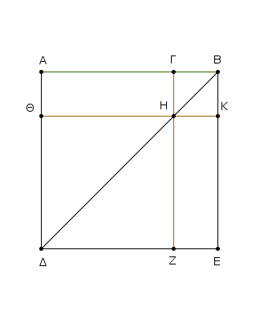
Εὐθεῖα γὰρ γραμμὴ ἡ ΑΒ τετμήσθω, ὡς ἔτυχεν, κατὰ τὸ Γ. λέγω, ὅτι τὸ ἀπὸ τῆς ΑΒ τετράγωνον ἴσον ἐστὶ τοῖς τε ἀπὸ τῶν ΑΓ, ΓΒ τετραγώνοις καὶ τῷ δὶς ὑπὸ τῶν ΑΓ, ΓΒ περιεχομένῳ ὀρθογωνίῳ.
᾿Αναγεγράφθω γὰρ ἀπὸ τῆς ΑΒ τετράγωνον τὸ ΑΔΕΒ, καὶ ἐπεζεύχθω ἡ ΒΔ, καὶ διὰ μὲν τοῦ Γ ὁποτέρᾳ τῶν ΑΔ, ΕΒ παράλληλος ἤχθω ἡ ΓΖ, διὰ δὲ τοῦ Η ὁποτέρᾳ τῶν ΑΒ, ΔΕ παράλληλος ἤχθω ἡ ΘΚ.
καὶ ἐπεὶ παράλληλός ἐστιν ἡ ΓΖ τῇ ΑΔ, καὶ εἰς αὐτὰς ἐμπέπτωκεν ἡ ΒΔ, ἡ ἐκτὸς γωνία ἡ ὑπὸ ΓΗΒ ἴση ἐστὶ τῇ ἐντὸς καὶ ἀπεναντίον τῇ ὑπὸ ΑΔΒ.
ἀλλ᾿ ἡ ὑπὸ ΑΔΒ τῇ ὑπὸ ΑΒΔ ἐστιν ἴση, ἐπεὶ καὶ πλευρὰ ἡ ΒΑ τῇ ΑΔ ἐστιν ἴση· καὶ ἡ ὑπὸ ΓΗΒ ἄρα γωνιά τῇ ὑπὸ ΗΒΓ ἐστιν ἴση· ὥστε καὶ πλευρὰ ἡ ΒΓ πλευρᾷ τῇ ΓΗ ἐστιν ἴση·
ἀλλ᾿ ἡ μὲν ΓΒ τῇ ΗΚ ἐστιν ἴση. ἡ δὲ ΓΗ τῇ ΚΒ· καὶ ἡ ΗΚ ἄρα τῇ ΚΒ ἐστιν ἴση· ἰσόπλευρον ἄρα ἐστὶ τὸ ΓΗΚΒ. λέγω δή, ὅτι καὶ ὀρθογώνιον.
ἐπεὶ γὰρ παράλληλός ἐστιν ἡ ΓΗ τῇ ΒΚ [καὶ εἰς αὐτὰς ἐμπέπτωκεν εὐθεῖα ἡ ΓΒ], αἱ ἄρα ὑπὸ ΚΒΓ, ΗΓΒ γωνίαι δύο ὀρθαῖς εἰσιν ἴσαι. ὀρθὴ δὲ ἡ ὑπὸ ΚΒΓ· ὀρθὴ ἄρα καὶ ἡ ὑπὸ ΒΓΗ· ὥστε καὶ αἱ ἀπεναντίον αἱ ὑπὸ ΓΗΚ, ΗΚΒ ὀρθαί εἰσιν. ὀρθογώνιον ἄρα ἐστὶ τὸ ΓΗΚΒ· ἐδείχθη δὲ καὶ ἰσόπλευρον· τετράγωνον ἄρα ἐστίν· καί ἐστιν ἀπὸ τῆς ΓΒ.
διὰ τὰ αὐτὰ δὴ καὶ τὸ ΘΖ τετράγωνόν ἐστιν· καί ἐστιν ἀπὸ τῆς ΘΗ, τουτέστιν [ἀπὸ] τῆς ΑΓ· τὰ ἄρα ΘΖ, ΚΓ τετράγωνα ἀπὸ τῶν ΑΓ, ΓΒ εἰσιν.
καὶ ἐπεὶ ἴσον ἐστὶ τὸ ΑΗ τῷ ΗΕ, καί ἐστι τὸ ΑΗ τὸ ὑπὸ τῶν ΑΓ, ΓΒ· ἴση γὰρ ἡ ΗΓ τῇ ΓΒ· καὶ τὸ ΗΕ ἄρα ἴσον ἐστὶ τῷ ὑπὸ ΑΓ, ΓΒ· τὰ ἄρα ΑΗ, ΗΕ ἴσα ἐστὶ τῷ δὶς ὑπὸ τῶν ΑΓ, ΓΒ.
ἔστι δὲ καὶ τὰ ΘΖ, ΓΚ τετράγωνα ἀπὸ τῶν ΑΓ, ΓΒ· τὰ ἄρα τέσσαρα τὰ ΘΖ, ΓΚ, ΑΗ, ΗΕ ἴσα ἐστὶ τοῖς τε ἀπὸ τῶν ΑΓ, ΓΒ τετραγώνοις καὶ τῷ δὶς ὑπὸ τῶν ΑΓ, ΓΒ περιεχομένῳ ὀρθογωνίῳ.
ἀλλὰ τὰ ΘΖ, ΓΚ, ΑΗ, ΗΕ ὅλον ἐστὶ τὸ ΑΔΕΒ, ὅ ἐστιν ἀπὸ τῆς ΑΒ τετράγωνον· τὸ ἄρα ἀπὸ τῆς ΑΒ τετράγωνον ἴσον ἐστὶ τοῖς τε ἀπὸ τῶν ΑΓ, ΓΒ τετραγώνοις καὶ τῷ δὶς ὑπὸ τῶν ΑΓ, ΓΒ περιεχομένῳ ὀρθογωνίῳ.
᾿Εὰν ἄρα εὐθεῖα γραμμὴ τμηθῇ, ὡς ἔτυχεν, τὸ ἀπὸ τῆς ὅλης τετράγωνον ἴσον ἐστὶ τοῖς τε ἀπὸ τῶν τμημάτων τετραγώνοις καὶ τῷ δὶς ὑπὸ τῶν τμημάτων περιεχομένῳ ὀρθογωνίῳ· ὅπερ ἔδει δεῖξαι.
᾿Εὰν εὐθεῖα γραμμὴ τμηθῇ εἰς ἴσα καὶ ἄνισα, τὸ ὑπὸ τῶν ἀνίσων τῆς ὅλης τμημάτων περιεχόμενον ὀρθογώνιον μετὰ τοῦ ἀπὸ τῆς μεταξὺ τῶν τομῶν τετραγώνου ἴσον ἐστὶ τῷ ἀπὸ τῆς ἡμισείας τετραγώνῳ.
Εὐθεῖα γάρ τις ἡ ΑΒ τετμήσθω εἰς μὲν ἴσα κατὰ τὸ Γ, εἰς δὲ ἄνισα κατὰ τὸ Δ· λέγω, ὅτι τὸ ὑπὸ τῶν ΑΔ, ΔΒ περιεχόμενον ὀρθογώνιον μετὰ τοῦ ἀπὸ τῆς ΓΔ τετραγώνου ἴσον ἐστὶ τῷ ἀπὸ τῆς ΓΒ τετραγώνῳ.
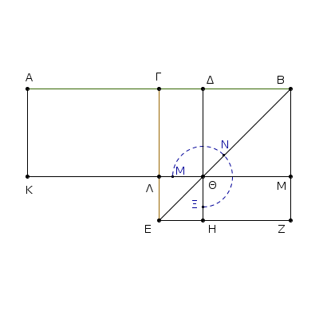
᾿Αναγεγράφθω γὰρ ἀπὸ τῆς ΓΒ τετράγωνον τὸ ΓΕΖΒ, καὶ ἐπεζεύχθω ἡ ΒΕ, καὶ διὰ μὲν τοῦ Δ ὁποτέρᾳ τῶν ΓΕ, ΒΖ παράλληλος ἤχθω ἡ ΔΗ, διὰ δὲ τοῦ Θ ὁποτέρᾳ τῶν ΑΒ, ΕΖ παράλληλος πάλιν ἤχθω ἡ ΚΜ, καὶ πάλιν διὰ τοῦ Α ὁποτέρᾳ τῶν ΓΛ, ΒΜ παράλληλος ἤχθω ἡ ΑΚ.
καὶ ἐπεὶ ἴσον ἐστὶ τὸ ΓΘ παραπλήρωμα τῷ ΘΖ παραπληρώματι, κοινὸν προσκείσθω τὸ ΔΜ· ὅλον ἄρα τὸ ΓΜ ὅλῳ τῷ ΔΖ ἴσον ἐστίν.
ἀλλὰ τὸ ΓΜ τῷ ΑΛ ἴσον ἐστίν, ἐπεὶ καὶ ἡ ΑΓ τῇ ΓΒ ἐστιν ἴση· καὶ τὸ ΑΛ ἄρα τῷ ΔΖ ἴσον ἐστίν. κοινὸν προσκείσθω τὸ ΓΘ· ὅλον ἄρα τὸ ΑΘ τῷ ΜΝΞ γνώμονι ἴσον ἐστίν. ἀλλὰ τὸ ΑΘ τὸ ὑπὸ τῶν ΑΔ, ΔΒ ἐστιν· ἴση γὰρ ἡ ΔΘ τῇ ΔΒ· καὶ ὁ ΜΝΞ ἄρα γνώμων ἴσος ἐστὶ τῷ ὑπὸ ΑΔ, ΔΒ. κοινὸν προσκείσθω τὸ ΛΗ, ὅ ἐστιν ἴσον τῷ ἀπὸ τῆς ΓΔ· ὁ ἄρα ΜΝΞ γνώμων καὶ τὸ ΛΗ ἴσα ἐστὶ τῷ ὑπὸ τῶν ΑΔ, ΔΒ περιεχομένῳ ὀρθογωνίῳ καὶ τῷ ἀπὸ τῆς ΓΔ τετραγώνῳ.
ἀλλὰ ὁ ΜΝΞ γνώμων καὶ τὸ ΛΗ ὅλον ἐστὶ τὸ ΓΕΖΒ τετράγωνον, ὅ ἐστιν ἀπὸ τῆς ΓΒ· τὸ ἄρα ὑπὸ τῶν ΑΔ, ΔΒ περιεχόμενον ὀρθογώνιον μετὰ τοῦ ἀπὸ τῆς ΓΔ τετραγώνου ἴσον ἐστὶ τῷ ἀπὸ τῆς ΓΒ τετραγώνῳ.
᾿Εὰν ἄρα εὐθεῖα γραμμὴ τμηθῇ εἰς ἴσα καὶ ἄνισα, τὸ ὑπὸ τῶν ἀνίσων τῆς ὅλης τμημάτων περιεχόμενον ὀρθογώνιον μετὰ τοῦ ἀπὸ τῆς μεταξὺ τῶν τομῶν τετραγώνου ἴσον ἐστὶ τῷ ἀπὸ τῆς ἡμισείας τετραγώνῳ. ὅπερ ἔδει δεῖξαι.
᾿Εὰν εὐθεῖα γραμμὴ τμηθῇ δίχα, προστεθῇ δέ τις αὐτῇ εὐθεῖα ἐπ᾿ εὐθείας, τὸ ὑπὸ τῆς ὅλης σὺν τῇ προσκειμένῃ καὶ τῆς προσκειμένης περιεχόμενον ὀρθόγώνιον μετὰ τοῦ ἀπὸ τῆς ἡμισείας τετραγώνου ἴσον ἐστὶ τῷ ἀπὸ τῆς συγκειμένης ἔκ τε τῆς ἡμισείας καὶ τῆς προσκειμένης τετραγώνῳ.
Εὐθεῖα γάρ τις ἡ ΑΒ τετμήσθω δίχα κατὰ τὸ Γ σημεῖον, προσκείσθω δέ τις αὐτῇ εὐθεῖα ἐπ᾿ εὐθείας ἡ ΒΔ· λέγω, ὅτι τὸ ὑπὸ τῶν ΑΔ, ΔΒ περιεχόμενον ὀρθογώνιον μετὰ τοῦ ἀπὸ τῆς ΓΒ τετραγώνου ἴσον ἐστὶ τῷ ἀπὸ τῆς ΓΔ τετραγώνῳ.
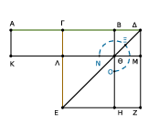
᾿Αναγεγράφθω γὰρ ἀπὸ τῆς ΓΔ τετράγωνον τὸ ΓΕΖΔ, καὶ ἐπεζεύχθω ἡ ΔΕ, καὶ διὰ μὲν τοῦ Β σημείου ὁποτέρᾳ τῶν ΕΓ, ΔΖ παράλληλος ἤχθω ἡ ΒΗ, διὰ δὲ τοῦ Θ σημείου ὁποτέρᾳ τῶν ΑΒ, ΕΖ παράλληλος ἤχθω ἡ ΚΜ, καὶ ἔτι διὰ τοῦ Α ὁποτέρᾳ τῶν ΓΛ, ΔΜ παράλληλος ἤχθω ἡ ΑΚ.
᾿Επεὶ οὖν ἴση ἐστὶν ἡ ΑΓ τῇ ΓΒ, ἴσον ἐστὶ καὶ τὸ ΑΛ τῷ ΓΘ. ἀλλὰ τὸ ΓΘ τῷ ΘΖ ἴσον ἐστίν. καὶ τὸ ΑΛ ἄρα τῷ ΘΖ ἐστιν ἴσον. κοινὸν προσκείσθω τὸ ΓΜ· ὅλον ἄρα τὸ ΑΜ τῷ ΝΞΟ γνώμονί ἐστιν ἴσον.
ἀλλὰ τὸ ΑΜ ἐστι τὸ ὑπὸ τῶν ΑΔ, ΔΒ· ἴση γάρ ἐστιν ἡ ΔΜ τῇ ΔΒ· καὶ ὁ ΝΞΟ ἄρα γνώμων ἴσος ἐστὶ τῷ ὑπὸ τῶν ΑΔ, ΔΒ [περιεχομένῳ ὀρθογωνίῳ]. κοινὸν προσκείσθω τὸ ΛΗ, ὅ ἐστιν ἴσον τῷ ἀπὸ τῆς ΒΓ τετραγώνῳ·
τὸ ἄρα ὑπὸ τῶν ΑΔ, ΔΒ περιεχόμενον ὀρθογώνιον μετὰ τοῦ ἀπὸ τῆς ΓΒ τετραγώνου ἴσον ἐστὶ τῷ ΝΞΟ γνώμονι καὶ τῷ ΛΗ. ἀλλὰ ὁ ΝΞΟ γνώμων καὶ τὸ ΛΗ ὅλον ἐστὶ τὸ ΓΕΖΔ τετράγωνον, ὅ ἐστιν ἀπὸ τῆς ΓΔ· τὸ ἄρα ὑπὸ τῶν ΑΔ, ΔΒ περιεχόμενον ὀρθογώνιον μετὰ τοῦ ἀπὸ τῆς ΓΒ τετραγώνου ἴσον ἐστὶ τῷ ἀπὸ τῆς ΓΔ τετραγώνῳ.
᾿Εὰν ἄρα εὐθεῖα γραμμὴ τμηθῇ δίχα, προστεθῇ δέ τις αὐτῇ εὐθεῖα ἐπ᾿ εὐθείας, τὸ ὑπὸ τῆς ὅλης σὺν τῇ προσκειμένῃ καὶ τῆς προσκειμένης περιεχόμενον ὀρθόγώνιον μετὰ τοῦ ἀπὸ τῆς ἡμισείας τετραγώνου ἴσον ἐστὶ τῷ ἀπὸ τῆς συγκειμένης ἔκ τε τῆς ἡμισείας καὶ τῆς προσκειμένης τετραγώνῳ· ὅπερ ἔδει δεῖξαι.
᾿Εὰν εὐθεῖα γραμμὴ τμηθῇ, ὡς ἔτυχεν, τὸ ἀπὸ τῆς ὅλης καὶ τὸ ἀφ᾿ ἑνὸς τῶν τμημάτων τὰ συναμφότερα τετράγωνα ἴσα ἐστὶ τῷ τε δὶς ὑπὸ τῆς ὅλης καὶ τοῦ εἰρημένου τμήματος περιεχομένῳ ὀρθογωνίῳ καὶ τῷ ἀπὸ τοῦ λοιποῦ τμήματος τετραγώνῳ.
Εὐθεῖα γάρ τις ἡ ΑΒ τετμήσθω, ὡς ἔτυχεν, κατὰ τὸ Γ σημεῖον· λέγω, ὅτι τὰ ἀπὸ τῶν ΑΒ, ΒΓ τετράγωνα ἴσα ἐστὶ τῷ τε δὶς ὑπὸ τῶν ΑΒ, ΒΓ περιεχομένῳ ὀρθογωνίῳ καὶ τῷ ἀπὸ τῆς ΓΑ τετραγώνῳ.
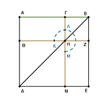
᾿Αναγεγράφθω γὰρ ἀπὸ τῆς ΑΒ τετράγωνον τὸ ΑΔΕΒ· καὶ καταγεγράφθω τὸ σχῆμα. ᾿Επεὶ οὖν ἴσον ἐστὶ τὸ ΑΗ τῷ ΗΕ, κοινὸν προσκείσθω τὸ ΓΖ· ὅλον ἄρα τὸ ΑΖ ὅλῳ τῷ ΓΕ ἴσον ἐστίν· τὰ ἄρα ΑΖ, ΓΕ διπλάσιά ἐστι τοῦ ΑΖ.
ἀλλὰ τὰ ΑΖ, ΓΕ ὁ ΚΛΜ ἐστι γνώμων καὶ τὸ ΓΖ τετράγωνον· ὁ ΚΛΜ ἄρα γνώμων καὶ τὸ ΓΖ διπλάσιά ἐστι τοῦ ΑΖ. ἔστι δὲ τοῦ ΑΖ διπλάσιον καὶ τὸ δὶς ὑπὸ τῶν ΑΒ, ΒΓ· ἴση γὰρ ἡ ΒΖ τῇ ΒΓ· ὁ ἄρα ΚΛΜ γνώμων καὶ τὸ ΓΖ τετράγωνον ἴσον ἐστὶ τῷ δὶς ὑπὸ τῶν ΑΒ, ΒΓ.
κοινὸν προσκείσθω τὸ ΔΗ, ὅ ἐστιν ἀπὸ τῆς ΑΓ τετράγωνον· ὁ ἄρα ΚΛΜ γνώμων καὶ τὰ ΒΗ, ΗΔ τετράγωνα ἴσα ἐστὶ τῷ τε δὶς ὑπὸ τῶν ΑΒ, ΒΓ περιεχομένῳ ὀρθογωνίῳ καὶ τῷ ἀπὸ τῆς ΑΓ τετραγώνῳ.
ἀλλὰ ὁ ΚΛΜ γνώμων καὶ τὰ ΒΗ, ΗΔ τετράγωνα ὅλον ἐστὶ τὸ ΑΔΕΒ καὶ τὸ ΓΖ, ἅ ἐστιν ἀπὸ τῶν ΑΒ, ΒΓ τετράγωνα· τὰ ἄρα ἀπὸ τῶν ΑΒ, ΒΓ τετράγωνα ἴσα ἐστὶ τῷ [τε] δὶς ὑπὸ τῶν ΑΒ, ΒΓ περιεχομένῳ ὀρθογωνίῳ μετὰ τοῦ ἀπὸ τῆς ΑΓ τετραγώνου.
᾿Εὰν ἄρα εὐθεῖα γραμμὴ τμηθῇ, ὡς ἔτυχεν, τὸ ἀπὸ τῆς ὅλης καὶ τὸ ἀφ᾿ ἑνὸς τῶν τμημάτων τὰ συναμφότερα τετράγωνα ἴσα ἐστὶ τῷ τε δὶς ὑπὸ τῆς ὅλης καὶ τοῦ εἰρημένου τμήματος περιεχομένῳ ὀρθογωνίῳ καὶ τῷ ἀπὸ τοῦ λοιποῦ τμήματος τετραγώνῳ· ὅπερ ἔδει δεῖξαι.
᾿Εὰν εὐθεῖα γραμμὴ τμηθῇ, ὡς ἔτυχεν, τὸ τετράκις ὑπὸ τῆς ὅλης καὶ ἑνὸς τῶν τμημάτων περιεχόμενον ὀρθογώνιον μετὰ τοῦ ἀπὸ τοῦ λοιποῦ τμήματος τετραγώνου ἴσον ἐστὶ τῷ ἀπό τε τῆς ὅλης καὶ τοῦ εἰρημένου τμήματος ὡς ἀπὸ μιᾶς ἀναγραφέντι τετραγώνῳ.
Εὐθεῖα γάρ τις ἡ ΑΒ τετμήσθω, ὡς ἔτυχεν, κατὰ τὸ Γ σημεῖον· λέγω, ὅτι τὸ τετράκις ὑπὸ τῶν ΑΒ, ΒΓ περιεχόμενον ὀρθογώνιον μετὰ τοῦ ἀπὸ τῆς ΑΓ τετραγώνου ἴσον ἐστὶ τῷ ἀπὸ τῆς ΑΒ, ΒΓ ὡς ἀπὸ μιᾶς ἀναγραφέντι τετραγώνῳ.
᾿Εκβεβλήσθω γὰρ ἐπ᾿ εὐθείας [τῇ ΑΒ εὐθεῖα] ἡ ΒΔ, καὶ κείσθω τῇ ΓΒ ἴση ἡ ΒΔ, καὶ ἀναγεγράφθω ἀπὸ τῆς ΑΔ τετράγωνον τὸ ΑΕΖΔ, καὶ καταγεγράφθω διπλοῦν τὸ σχῆμα.
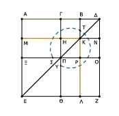
᾿Επεὶ οὖν ἴση ἐστὶν ἡ ΓΒ τῇ ΒΔ, ἀλλὰ ἡ μὲν ΓΒ τῇ ΗΚ ἐστιν ἴση, ἡ δὲ ΒΔ τῇ ΚΝ, καὶ ἡ ΗΚ ἄρα τῇ ΚΝ ἐστιν ἴση. διὰ τὰ αὐτὰ δὴ καὶ ἡ ΠΡ τῇ ΡΟ ἐστιν ἴση. καὶ ἐπεὶ ἴση ἐστὶν ἡ ΒΓ τῂ ΒΔ, ἡ δὲ ΗΚ τῇ ΚΝ, ἴσον ἄρα ἐστὶ καὶ τὸ μὲν ΓΚ τῷ ΚΔ, τὸ δὲ ΗΡ τῷ ΡΝ.
ἀλλὰ τὸ ΓΚ τῷ ΡΝ ἐστιν ἴσον· παραπληρώματα γὰρ τοῦ ΓΟ παραλληλογράμμου· καὶ τὸ ΚΔ ἄρα τῷ ΗΡ ἴσον ἐστίν· τὰ τέσσαρα ἄρα τὰ ΔΚ, ΓΚ, ΗΡ, ΡΝ ἴσα ἀλλήλοις ἐστίν. τὰ τέσσαρα ἄρα τετραπλάσιά ἐστι τοῦ ΓΚ.
πάλιν ἐπεὶ ἴση ἐστὶν ἡ ΓΒ τῇ ΒΔ, ἀλλὰ ἡ μὲν ΒΔ τῇ ΒΚ, τουτέστι τῇ ΓΗ ἴση, ἡ δὲ ΓΒ τῇ ΗΚ, τουτέστι τῇ ΗΠ, ἐστιν ἴση, καὶ ἡ ΓΗ ἄρα τῇ ΗΠ ἴση ἐστίν. καὶ ἐπεὶ ἴση ἐστὶν ἡ μὲν ΓΗ τῇ ΗΠ, ἡ δὲ ΠΡ τῇ ΡΟ, ἴσον ἐστὶ καὶ τὸ μὲν ΑΗ τῷ ΜΠ, τὸ δὲ ΠΛ τῷ ΡΖ.
ἀλλὰ τὸ ΜΠ τῷ ΠΛ ἐστιν ἴσον· παραπληρώματα γὰρ τοῦ ΜΛ παραλληλογράμμου· καὶ τὸ ΑΗ ἄρα τῷ ΡΖ ἴσον ἐστίν· τὰ τέσσαρα ἄρα τὰ ΑΗ, ΜΠ, ΠΛ, ΡΖ ἴσα ἀλλήλοις ἐστίν· τὰ τέσσαρα ἄρα τοῦ ΑΗ ἐστι τετραπλάσια.
ἐδείχθη δὲ καὶ τὰ τέσσαρα τὰ ΓΚ, ΚΔ, ΗΡ, ΡΝ τοῦ ΓΚ τετραπλάσια· τὰ ἄρα ὀκτώ, ἃ περιέχει τὸν ΣΤΥ γνώμονα, τετραπλάσιά ἐστι τοῦ ΑΚ. καὶ ἐπεὶ τὸ ΑΚ τὸ ὑπὸ τῶν ΑΒ, ΒΔ ἐστιν· ἴση γὰρ ἡ ΒΚ τῇ ΒΔ· τὸ ἄρα τετράκις ὑπὸ τῶν ΑΒ, ΒΔ τετραπλάσιόν ἐστι τοῦ ΑΚ.
ἐδείχθη δὲ τοῦ ΑΚ τετραπλάσιος καὶ ὁ ΣΤΥ γνώμων· τὸ ἄρα τετράκις ὑπὸ τῶν ΑΒ, ΒΔ ἴσον ἐστὶ τῷ ΣΤΥ γνώμονι. κοινὸν προσκείσθω τὸ ΞΘ, ὅ ἐστιν ἴσον τῷ ἀπὸ τῆς ΑΓ τετραγώνῳ· τὸ ἄρα τετράκις ὑπὸ τῶν ΑΒ, ΒΔ περιεχόμενον ὀρθογώνιον μετὰ τοῦ ἀπὸ ΑΓ τετραγώνου ἴσον ἐστὶ τῷ ΣΤΥ γνώμονι καὶ τῷ ΞΘ.
ἀλλὰ ὁ ΣΤΥ γνώμων καὶ τὸ ΞΘ ὅλον ἐστὶ τὸ ΑΕΖΔ τετράγωνον, ὅ ἐστιν ἀπὸ τῆς ΑΔ· τὸ ἄρα τετράκις ὑπὸ τῶν ΑΒ, ΒΔ μετὰ τοῦ ἀπὸ ΑΓ ἴσον ἐστὶ τῷ ἀπὸ ΑΔ τετραγώνῳ· ἴση δὲ ἡ ΒΔ τῇ ΒΓ. τὸ ἄρα τετράκις ὑπὸ τῶν ΑΒ, ΒΓ περιεχόμενον ὀρθογώνιον μετὰ τοῦ ἀπὸ ΑΓ τετραγώνου ἴσον ἐστὶ τῷ ἀπὸ τῆς ΑΔ, τουτέστι τῷ ἀπὸ τῆς ΑΒ καὶ ΒΓ ὡς ἀπὸ μιᾶς ἀναγραφέντι τετραγώνῳ.
᾿Εὰν ἄρα εὐθεῖα γραμμὴ τμηθῇ, ὡς ἔτυχεν, τὸ τετράκις ὑπὸ τῆς ὅλης καὶ ἑνὸς τῶν τμημάτων περιεχόμενον ὀρθογώνιον μετὰ τοῦ ἀπὸ τοῦ λοιποῦ τμήματος τετραγώνου ἴσου ἐστὶ τῷ ἀπό τε τῆς ὅλης καὶ τοῦ εἰρημένου τμήματος ὡς ἀπὸ μιᾶς ἀναγραφέντι τετραγώνῳ· ὅπερ ἔδει δεῖξαι.
᾿Εὰν εὐθεῖα γραμμὴ τμηθῇ εἰς ἴσα καὶ ἄνισα, τὰ ἀπὸ τῶν ἀνίσων τῆς ὅλης τμημάτων τετράγωνα διπλάσιά ἐστι τοῦ τε ἀπὸ τῆς ἡμισείας καὶ τοῦ ἀπὸ τῆς μεταξὺ τῶν τομῶν τετραγώνου.
Εὐθεῖα γάρ τις ἡ ΑΒ τετμήσθω εἰς μὲν ἴσα κατὰ τὸ Γ, εἱς δὲ ἄνισα κατὰ τὸ Δ· λέγω, ὅτι τὰ ἀπὸ τῶν ΑΔ, ΔΒ τετράγωνα διπλάσιά ἐστι τῶν ἀπὸ τῶν ΑΓ, ΓΔ τετραγώνων.
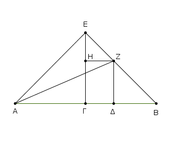
῎Ηχθω γὰρ ἀπὸ τοῦ Γ τῇ ΑΒ πρὸς ὀρθὰς ἡ ΓΕ, καὶ κείσθω ἴση ἑκατέρᾳ τῶν ΑΓ, ΓΒ, καὶ ἐπεζεύχθωσαν αἱ ΕΑ, ΕΒ, καὶ διὰ μὲν τοῦ Δ τῇ ΕΓ παράλληλος ἤχθω ἡ ΔΖ, διὰ δὲ τοῦ Ζ τῇ ΑΒ ἡ ΖΗ, καὶ ἐπεζεύχθω ἡ ΑΖ.
καὶ ἐπεὶ ἴση ἐστὶν ἡ ΑΓ τῇ ΓΕ, ἴση ἐστὶ καὶ ἡ ὑπὸ ΕΑΓ γωνία τῇ ὑπὸ ΑΕΓ. καὶ ἐπεὶ ὀρθή ἐστιν ἡ πρὸς τῷ Γ, λοιπαὶ ἄρα αἱ ὑπὸ ΕΑΓ, ΑΕΓ μιᾷ ὀρθῇ ἴσαι εἰσίν· καί εἰσιν ἴσαι· ἡμίσεια ἄρα ὀρθῆς ἐστιν ἑκατέρα τῶν ὑπὸ ΓΕΑ, ΓΑΕ.
δὶα τὰ αὐτὰ δὴ καὶ ἑκατέρα τῶν ὑπὸ ΓΕΒ, ΕΒΓ ἡμίσειά ἐστιν ὀρθῆς· ὅλη ἄρα ἡ ὑπὸ ΑΕΒ ὀρθή ἐστιν. καὶ ἐπεὶ ἡ ὑπὸ ΗΕΖ ἡμίσειά ἐστιν ὀρθῆς, ὀρθὴ δὲ ἡ ὑπὸ ΕΗΖ· ἴση γάρ ἐστι τῇ ἐντὸς καὶ ἀπεναντίον τῇ ὑπὸ ΕΓΒ·
λοιπὴ ἄρα ἡ ὑπὸ ΕΖΗ ἡμίσειά ἐστιν ὀρθῆς· ἴση ἄρα [ἐστὶν] ἡ ὑπὸ ΗΕΖ γωνία τῇ ὑπὸ ΕΖΗ· ὥστε καὶ πλευρὰ ἡ ΕΗ τῇ ΗΖ ἐστιν ἴση.
πάλιν ἐπεὶ ἡ πρὸς τῷ Β γωνία ἡμίσειά ἐστιν ὀρθῆς, ὀρθὴ δὲ ἡ ὑπὸ ΖΔΒ· ἴση γὰρ πάλιν ἐστὶ τῇ ἐντὸς καὶ ἀπεναντίον τῇ ὑπὸ ΕΓΒ· λοιπὴ ἄρα ἡ ὑπὸ ΒΖΔ ἡμίσειά ἐστιν ὀρθῆς· ἴση ἄρα ἡ πρὸς τῷ Β γωνία τῇ ὑπὸ ΔΖΒ· ὥστε καὶ πλευρὰ ἡ ΖΔ πλευρᾷ τῇ ΔΒ ἐστιν ἴση.
καὶ ἐπεὶ ἴση ἐστὶν ἡ ΑΓ τῇ ΓΕ, ἴσον ἐστὶ καὶ τὸ ἀπὸ ΑΓ τῷ ἀπὸ ΓΕ· τὰ ἄρα ἀπὸ τῶν ΑΓ, ΓΕ τετράγωνα διπλάσιά ἐστι τοῦ ἀπὸ ΑΓ. τοῖς δὲ ἀπὸ τῶν ΑΓ, ΓΕ ἴσον ἐστὶ τὸ ἀπὸ τῆς ΕΑ τετράγωνον· ὀρθὴ γὰρ ἡ ὑπὸ ΑΓΕ γωνία· τὸ ἄρα ἀπὸ τῆς ΕΑ διπλάσιόν ἐστι τοῦ ἀπὸ τῆς ΑΓ.
πάλιν, ἐπεὶ ἴση ἐστὶν ἡ ΕΗ τῇ ΗΖ, ἴσον καὶ τὸ ἀπὸ τῆς ΕΗ τῷ ἀπὸ τῆς ΗΖ· τὰ ἄρα ἀπὸ τῶν ΕΗ, ΗΖ τετράγωνα διπλάσιά ἐστι τοῦ ἀπὸ τῆς ΗΖ τετραγώνου. τοῖς δὲ ἀπὸ τῶν ΕΗ, ΗΖ τετραγώνοις ἴσον ἐστὶ τὸ ἀπὸ τῆς ΕΖ τετράγωνον· τὸ ἄρα ἀπὸ τῆς ΕΖ τετράγωνον διπλάσιόν ἐστι τοῦ ἀπὸ τῆς ΗΖ. ἴση δὲ ἡ ΗΖ τῇ ΓΔ· τὸ ἄρα ἀπὸ τῆς ΕΖ διπλάσιόν ἐστι τοῦ ἀπὸ τῆς ΓΔ.
ἔστι δὲ καὶ τὸ ἀπὸ τῆς ΕΑ διπλάσιον τοῦ ἀπὸ τῆς ΑΓ· τὰ ἄρα ἀπὸ τῶν ΑΕ, ΕΖ τετράγωνα διπλάσιά ἐστι τῶν ἀπὸ τῶν ΑΓ, ΓΔ τετραγώνων. τοῖς δὲ ἀπὸ τῶν ΑΕ, ΕΖ ἴσον ἐστὶ τὸ ἀπὸ τῆς ΑΖ τετράγωνον· ὀρθὴ γάρ ἐστιν ἡ ὑπὸ ΑΕΖ γωνία· τὸ ἄρα ἀπὸ τῆς ΑΖ τετράγωνον διπλάσιόν ἐστι τῶν ἀπὸ τῶν ΑΓ, ΓΔ.
τῷ δὲ ἀπὸ τῆς ΑΖ ἴσα τὰ ἀπὸ τῶν ΑΔ, ΔΖ· ὀρθὴ γὰρ ἡ πρὸς τῷ Δ γωνία· τὰ ἄρα ἀπὸ τῶν ΑΔ, ΔΖ διπλάσιά ἐστι τῶν ἀπὸ τῶν ΑΓ, ΓΔ τετραγώνων. ἴση δὲ ἡ ΔΖ τῇ ΔΒ· τὰ ἄρα ἀπὸ τῶν ΑΔ, ΔΒ τετράγωνα διπλάσιά ἐστι τῶν ἀπὸ τῶν ΑΓ, ΓΔ τετράγώνων.
᾿Εὰν ἄρα εὐθεῖα γραμμὴ τμηθῇ εἰς ἴσα καὶ ἄνισα, τὰ ἀπὸ τῶν ἀνίσων τῆς ὅλης τμημάτων τετράγωνα διπλάσιά ἐστι τοῦ τε ἀπὸ τῆς ἡμισείας καὶ τοῦ ἀπὸ τῆς μεταξὺ τῶν τομῶν τετραγώνου· ὅπερ ἔδει δεῖξαι.
᾿Εὰν εὐθεῖα γραμμὴ τμηθῇ δίχα, προστεθῇ δέ τις αὐτῇ εὐθεῖα ἐπ᾿ εὐθείας, τὸ ἀπὸ τῆς ὅλης σὺν τῇ προσκειμένῃ καὶ τὸ ἀπὸ τῆς προσκειμένης τὰ συναμφότερα τετράγωνα διπλάσιά ἐστι τοῦ τε ἀπὸ τῆς ἡμισείας καὶ τοῦ ἀπὸ τῆς συγκειμένης ἔκ τε τῆς ἡμισείας καὶ τῆς προσκειμένης ὡς ἀπὸ μιᾶς ἀναγραφέντος τετραγώνου.
Εὐθεῖα γάρ τις ἡ ΑΒ τετμήσθω δίχα κατὰ τὸ Γ, προσκείσθω δέ τις αὐτῇ εὐθεῖα ἐπ᾿ εὐθείας ἡ ΒΔ· λέγω, ὅτι τὰ ἀπὸ τῶν ΑΔ, ΔΒ τετράγωνα διπλάσιά ἐστι τῶν ἀπὸ τῶν ΑΓ, ΓΔ τετραγώνων.
῎Ηχθω γὰρ ἀπὸ τοῦ Γ σημείου τῇ ΑΒ πρὸς ὀρθὰς ἡ ΓΕ, καὶ κείσθω ἴση ἑκατέρᾳ τῶν ΑΓ, ΓΒ, καὶ ἐπεζεύχθωσαν αἱ ΕΑ, ΕΒ· καὶ διὰ μὲν τοῦ Ε τῇ ΑΔ παράλληλος ἤχθω ἡ ΕΖ, διὰ δὲ τοῦ Δ τῇ ΓΕ παράλληλος ἤχθω ἡ ΖΔ.
καὶ ἐπεὶ εἰς παραλλήλους εὐθείας τὰς ΕΓ, ΖΔ εὐθεῖά τις ἐνέπεσεν ἡ ΕΖ, αἱ ὑπὸ ΓΕΖ, ΕΖΔ ἄρα δυσὶν ὀρθαῖς ἴσαι εἰσίν· αἱ ἄρα ὑπὸ ΖΕΒ, ΕΖΔ δύο ὀρθῶν ἐλάσσονές εἰσιν· αἱ δὲ ἀπ᾿ ἐλασσόνων ἢ δύο ὀρθῶν ἐκβαλλόμεναι συμπίπτουσιν· αἱ ἄρα ΕΒ, ΖΔ ἐκβαλλόμεναι ἐπὶ τὰ Β, Δ μέρη συμπεσοῦνται.
ἐκβεβλήσθωσαν καὶ συμπιπτέτωσαν κατὰ τὸ Η, καὶ ἐπεζεύχθω ἡ ΑΗ. καὶ ἐπεὶ ἴση ἐστὶν ἡ ΑΓ τῇ ΓΕ, ἴση ἐστὶ καὶ γωνία ἡ ὑπὸ ΕΑΓ τῇ ὑπὸ ΑΕΓ· καὶ ὀρθὴ ἡ πρὸς τῷ Γ· ἡμίσεια ἄρα ὀρθῆς [ἐστιν] ἑκατέρα τῶν ὑπὸ ΕΑΓ, ΑΕΓ.
διὰ τὰ αὐτὰ δὴ καὶ ἑκατέρα τῶν ὑπὸ ΓΕΒ, ΕΒΓ ἡμίσειά ἐστιν ὀρθῆς· ὀρθὴ ἄρα ἐστὶν ἡ ὑπὸ ΑΕΒ. καὶ ἐπεὶ ἡμίσεια ὀρθῆς ἐστιν ἡ ὑπὸ ΕΒΓ, ἡμίσεια ἄρα ὀρθῆς καὶ ἡ ὑπὸ ΔΒΗ. ἔστι δὲ καὶ ἡ ὑπὸ ΒΔΗ ὀρθή· ἴση γάρ ἐστι τῇ ὑπὸ ΔΓΕ· ἐναλλὰξ γάρ· λοιπὴ ἅρα ἡ ὑπὸ ΔΗ ἡμίσειά ἐστιν ὀρθῆς· ἡ ἄρα ὑπὸ ΔΗΒ τῇ ὑπὸ ΔΒΗ ἐστιν ἴση· ὥστε καὶ πλευρὰ ἡ ΒΔ πλευρᾷ τῇ ΗΔ ἐστιν ἴση.
πάλιν, ἐπεὶ ἡ ὑπὸ ΕΗΖ ἡμίσειά ἐστιν ὀρθῆς, ὀρθὴ δὲ ἡ πρὸς τῷ Ζ· ἴση γάρ ἐστι τῇ ἀπεναντίον τῇ πρὸς τῷ Γ· λοιπὴ ἄρα ἡ ὑπὸ ΖΕΗ ἡμίσειά ἐστιν ὀρθῆς· ἴση ἄρα ἡ ὑπὸ ΕΗΖ γωνία τῇ ὑπὸ ΖΕΗ· ὥστε καὶ πλευρὰ ἡ ΗΖ πλευρᾷ τῇ ΕΖ ἐστιν ἴση. καὶ ἐπεὶ [ἴση ἐστὶν ἡ ΕΓ τῇ ΓΑ], ἴσον ἐστὶ [καὶ] τὸ ἀπὸ τῆς ΕΓ τετράγωνον τῷ ἀπὸ τῆς ΓΑ τετραγώνῳ· τὰ ἄρα ἀπὸ τῶν ΕΓ, ΓΑ τετράγωνα διπλάσιά ἐστι τοῦ ἀπὸ τῆς ΓΑ τετραγώνου. τοῖς δὲ ἀπὸ τῶν ΕΓ, ΓΑ ἴσον ἐστὶ τὸ ἀπὸ τῆς ΕΑ· τὸ ἄρα ἀπὸ τῆς ΕΑ τετράγωνον διπλάσιόν ἐστι τοῦ ἀπὸ τῆς ΑΓ τετραγώνου.
πάλιν, ἐπεὶ ἴση ἐστὶν ἡ ΖΗ τῇ ΕΖ, ἴσον ἐστὶ καὶ τὸ ἀπὸ τῆς ΖΗ τῷ ἀπὸ τῆς ΖΕ· τὰ ἄρα ἀπὸ τῶν ΗΖ, ΖΕ διπλάσιά ἐστι τοῦ ἀπὸ τῆς ΕΖ. τοῖς δὲ ἀπὸ τῶν ΗΖ, ΖΕ ἴσον ἐστὶ τὸ ἀπὸ τῆς ΕΗ· τὸ ἄρα ἀπὸ τῆς ΕΗ διπλάσιόν ἐστι τοῦ ἀπὸ τῆς ΕΖ. ἴση δὲ ἡ ΕΖ τῇ ΓΔ· τὸ ἄρα ἀπὸ τῆς ΕΗ τετράγωνον διπλάσιόν ἐστι τοῦ ἀπὸ τῆς ΓΔ. ἐδείχθη δὲ καὶ τὸ ἀπὸ τῆς ΕΑ διπλάσιον τοῦ ἀπὸ τῆς ΑΓ· τὰ ἄρα ἀπὸ τῶν ΑΕ, ΕΗ τετράγωνα διπλάσιά ἐστι τῶν ἀπὸ τῶν ΑΓ, ΓΔ τετραγώνων.
τοῖς δὲ ἀπὸ τῶν ΑΕ, ΕΗ τετραγώνοις ἴσον ἐστὶ τὸ ἀπὸ τῆς ΑΗ τετράγωνον· τὸ ἄρα ἀπὸ τῆς ΑΗ διπλάσιόν ἐστι τῶν ἀπὸ τῶν ΑΓ, ΓΔ. τῷ δὲ ἀπὸ τῆς ΑΗ ἴσα ἐστὶ τὰ ἀπὸ τῶν ΑΔ, ΔΗ· τὰ ἄρα ἀπὸ τῶν ΑΔ, ΔΗ [τετράγωνα] διπλάσιά ἐστι τῶν ἀπὸ τῶν ΑΓ, ΓΔ [τετραγώνων]. ἴση δὲ ἡ ΔΗ τῇ ΔΒ· τὰ ἄρα ἀπὸ τῶν ΑΔ, ΔΒ [τετράγωνα] διπλάσιά ἐστι τῶν ἀπὸ τῶν ΑΓ, ΓΔ τετραγώνων.
᾿Εὰν ἄρα εὐθεῖα γραμμὴ τμηθῇ δίχα, προστεθῇ δέ τις αὐτῇ εὐθεῖα ἐπ᾿ εὐθείας, τὸ ἀπὸ τῆς ὅλης σὺν τῇ προσκειμένῃ καὶ τὸ ἀπὸ τῆς προσκειμένης τὰ συναμφότερα τετράγωνα διπλάσιά ἐστι τοῦ τε ἀπὸ τῆς ἡμισείας καὶ τοῦ ἀπὸ τῆς συγκειμένης ἔκ τε τῆς ἡμισείας καὶ τῆς προσκειμένης ὡς ἀπὸ μιᾶς ἀναγραφέντος τετραγώνου· ὅπερ ἔδει δεῖξαι.
Τὴν δοθεῖσαν εὐθεῖαν τεμεῖν ὥστε τὸ ὑπὸ τῆς ὅλης καὶ τοῦ ἑτέρου τῶν τμημάτων περιεχόμενον ὀρθογώνιον ἴσον εἶναι τῷ ἀπὸ τοῦ λοιποῦ τμήματος τετραγώνῳ.
῎Εστω ἡ δοθεῖσα εὐθεῖα ἡ ΑΒ· δεῖ δὴ τὴν ΑΒ τεμεῖν ὥστε τὸ ὑπὸ τῆς ὅλης καὶ τοῦ ἑτέρου τῶν τμημάτων περιεχόμενον ὀρθογώνιον ἴσον εἶναι τῷ ἀπὸ τοῦ λοιποῦ τμήματος τετραγώνῳ.
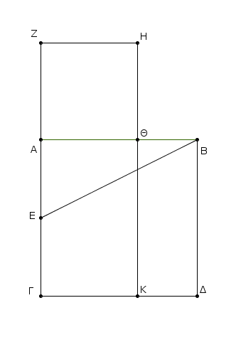
᾿Αναγεγράφθω γὰρ ἀπὸ τῆς ΑΒ τετράγωνον τὸ ΑΒΔΓ, καὶ τετμήσθω ἡ ΑΓ δίχα κατὰ τὸ Ε σημεῖον, καὶ ἐπεζεύχθω ἡ ΒΕ, καὶ διήχθω ἡ ΓΑ ἐπὶ τὸ Ζ, καὶ κείσθω τῇ ΒΕ ἴση ἡ ΕΖ, καὶ ἀναγεγράφθω ἀπὸ τῆς ΑΖ τετράγωνον τὸ ΖΘ, καὶ διήχθω ἡ ΗΘ ἐπὶ τὸ Κ· λέγω, ὅτι ἡ ΑΒ τέτμηται κατὰ τὸ Θ, ὥστε τὸ ὑπὸ τῶν ΑΒ, ΒΘ περιεχόμενον ὀρθογώνιον ἴσον ποιεῖν τῷ ἀπὸ τῆς ΑΘ τετραγώνῳ.
᾿Επεὶ γὰρ εὐθεῖα ἡ ΑΓ τέτμηται δίχα κατὰ τὸ Ε, πρόσκειται δὲ αὐτῇ ἡ ΖΑ, τὸ ἄρα ὑπὸ τῶν ΓΖ, ΖΑ περιεχόμενον ὀρθογώνιον μετὰ τοῦ ἀπὸ τῆς ΑΕ τετραγώνου ἴσον ἐστὶ τῷ ἀπὸ τῆς ΕΖ τετραγώνῳ. ἴση δὲ ἡ ΕΖ τῇ ΕΒ· τὸ ἄρα ὑπὸ τῶν ΓΖ, ΖΑ μετὰ τοῦ ἀπὸ τῆς ΑΕ ἴσον ἐστὶ τῷ ἀπὸ ΕΒ.
ἀλλὰ τῷ ἀπὸ ΕΒ ἴσα ἐστὶ τὰ ἀπὸ τῶν ΒΑ, ΑΕ· ὀρθὴ γὰρ ἡ πρὸς τῷ Α γωνία· τὸ ἄρα ὑπὸ τῶν ΓΖ, ΖΑ μετὰ τοῦ ἀπὸ τῆς ΑΕ ἴσον ἐστὶ τοῖς ἀπὸ τῶν ΒΑ, ΑΕ. κοινὸν ἀφῃρήσθω τὸ ἀπὸ τῆς ΑΕ· λοιπὸν ἄρα τὸ ὑπὸ τῶν ΓΖ, ΖΑ περιεχόμενον ὀρθογώνιον ἴσον ἐστὶ τῷ ἀπὸ τῆς ΑΒ τετραγώνῳ.
καί ἐστι τὸ μὲν ὑπὸ τῶν ΓΖ, ΖΑ τὸ ΖΚ· ἴση γὰρ ἡ ΑΖ τῇ ΖΗ· τὸ δὲ ἀπὸ τῆς ΑΒ τὸ ΑΔ· τὸ ἄρα ΖΚ ἴσον ἐστὶ τῷ ΑΔ. κοινὸν ἀρῃρήσθω τὸ ΑΚ· λοιπὸν ἄρα τὸ ΖΘ τῷ ΘΔ ἴσον ἐστίν. καί ἐστι τὸ μὲν ΘΔ τὸ ὑπὸ τῶν ΑΒ, ΒΘ· ἴση γὰρ ἡ ΑΒ τῇ ΒΔ· τὸ δὲ ΖΘ τὸ ἀπὸ τῆς ΑΘ· τὸ ἄρα ὑπὸ τῶν ΑΒ, ΒΘ περιεχόμενον ὀρθογώνιον ἴσον ἐστὶ τῷ ἀπὸ ΘΑ τετραγώνῳ.
῾Η ἄρα δοθεῖσα εὐθεῖα ἡ ΑΒ τέτμηται κατὰ τὸ Θ ὥστε τὸ ὑπὸ τῶν ΑΒ, ΒΘ περιεχόμενον ὀρθογώνιον ἴσον ποιεῖν τῷ ἀπὸ τῆς ΘΑ τετραγώνῳ· ὅπερ ἔδει ποιῆσαι.
᾿Εν τοῖς ἀμβλυγωνίοις τριγώνοις τὸ ἀπὸ τῆς τὴν ἀμβλεῖαν γωνίαν ὑποτεινούσης πλευρᾶς τετράγωνον μεῖζόν ἐστι τῶν ἀπὸ τῶν τὴν ἀμβλεῖαν γωνίαν περιεχουσῶν πλευρῶν τετραγώνων τῷ περιεχομένῳ δὶς ὑπὸ τε μιᾶς τῶν περὶ τὴν ἀμβλεῖαν γωνίαν, ἐφ᾿ ἣν ἡ κάθετος πίπτει, καὶ τῆς ἀπολαμβανομένης ἐκτὸς ὑπὸ τῆς καθέτου πρὸς τῇ ἀμβλείᾳ γωνίᾳ.
῎Εστω ἀμβλυγώνιον τρίγωνον τὸ ΑΒΓ ἀμβλεῖαν ἔχον τὴν ὑπὸ ΒΑΓ, καὶ ἤχθω ἀπὸ τοῦ Β σημείου ἐπὶ τὴν ΓΑ ἐκβληθεῖσαν κάθετος ἡ ΒΔ. λέγω, ὅτι τὸ ἀπὸ τῆς ΒΓ τετράγωνον μεῖζόν ἐστι τῶν ἀπὸ τῶν ΒΑ, ΑΓ τετραγώνων τῷ δὶς ὑπὸ τῶν ΓΑ, ΑΔ περιεχομένῳ ὀρθογωνίῳ.
᾿Επεὶ γὰρ εὐθεῖα ἡ ΓΔ τέτμηται, ὡς ἔτυχεν, κατὰ τὸ Α σημεῖον, τὸ ἄρα ἀπὸ τῆς ΔΓ ἴσον ἐστὶ τοῖς ἀπὸ τῶν ΓΑ, ΑΔ τετραγώνοις καὶ τῷ δὶς ὑπὸ τῶν ΓΑ, ΑΔ περιεχομένῳ ὀρθογωνίῳ.
κοινὸν προσκείσθω τὸ ἀπὸ τῆς ΔΒ· τὰ ἄρα ἀπὸ τῶν ΓΔ, ΔΒ ἴσα ἐστὶ τοῖς τε ἀπὸ τῶν ΓΑ, ΑΔ, ΔΒ τετραγώνοις καὶ τῷ δὶς ὑπὸ τῶν ΓΑ, ΑΔ [περιεχομένῳ ὀρθογωνίῳ].
ἀλλὰ τοῖς μὲν ἀπὸ τῶν ΓΔ, ΔΒ ἴσον ἐστὶ τὸ ἀπὸ τῆς ΓΒ· ὀρθὴ γὰρ ἡ προς τῷ Δ γωνία· τοῖς δὲ ἀπὸ τῶν ΑΔ, ΔΒ ἴσον τὸ ἀπὸ τῆς ΑΒ· τὸ ἄρα ἀπὸ τῆς ΓΒ τετράγωνον ἴσον ἐστὶ τοῖς τε ἀπὸ τῶν ΓΑ, ΑΒ τετραγώνοις καὶ τῷ δὶς ὑπὸ τῶν ΓΑ, ΑΔ περιεχομένῳ ὀρθογωνίῳ· ὥστε τὸ ἀπὸ τῆς ΓΒ τετράγωνον τῶν ἀπὸ τῶν ΓΑ, ΑΒ τετραγώνων μεῖζόν ἐστι τῷ δὶς ὑπὸ τῶν ΓΑ, ΑΔ περιεχομένῳ ὀρθογωνίῳ.
᾿Εν ἄρα τοῖς ἀμβλυγωνίοις τριγώνοις τὸ ἀπὸ τῆς τὴν ἀμβλεῖαν γωνίαν ὑποτεινούσης πλευρᾶς τετράγωνον μεῖζόν ἐστι τῶν ἀπὸ τῶν τὴν ἀμβλεῖαν γωνίαν περιεχουσῶν πλευρῶν τετραγώνων τῷ περιχομένῳ δὶς ὑπό τε μιᾶς τῶν περὶ τὴν ἀμβλεῖαν γωνίαν, ἐφ᾿ ἣν ἡ κάθετος πίπτει, καὶ τῆς ἀπολαμβανομένης ἐκτὸς ὑπὸ τῆς καθέτου πρὸς τῇ ἀμβλείᾳ γωνίᾳ· ὅπερ ἔδει δεῖξαι.
᾿Εν τοῖς ὀξυγωνίοις τριγώνοις τὸ ἀπὸ τῆς τὴν ὀξεῖαν γωνίαν ὑποτεινούσης πλευρᾶς τετράγωνον ἔλαττόν ἐστι τῶν ἀπὸ τῶν τὴν ὀξεῖαν γωνίαν περιεχουσῶν πλευρῶν τετραγώνων τῷ περιεχομένῳ δὶς ὑπό τε μιᾶς τῶν περὶ τὴν ὀξεῖαν γωνίαν, ἐφ᾿ ἣν ἡ κάθετος πίπτει, καὶ τῆς ἀπολαμβανομένης ἐντὸς ὑπὸ τῆς καθέτου πρὸς τῇ ὀξείᾳ γωνίᾳ.
῎Εστω ὀξυγώνιον τρίγωνον τὸ ΑΒΓ ὀξεῖαν ἔχον τὴν πρὸς τῷ Β γωνίαν, καὶ ἤχθω ἀπὸ τοῦ Α σημείου ἐπὶ τὴν ΒΓ κάθετος ἡ ΑΔ· λέγω, ὅτι τὸ ἀπὸ τῆς ΑΓ τετράγωνον ἔλαττόν ἐστι τῶν ἀπὸ τῶν ΓΒ, ΒΑ τετραγώνων τῷ δὶς ὑπὸ τῶν ΓΒ, ΒΔ περιεχομένῳ ὀρθογωνίῳ.
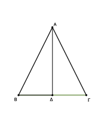
᾿Επεὶ γὰρ εὐθεῖα ἡ ΓΒ τέτμηται, ὡς ἔτυχεν, κατὰ τὸ Δ, τὰ ἄρα ἀπὸ τῶν ΓΒ, ΒΔ τετράγωνα ἴσα ἐστὶ τῷ τε δὶς ὑπὸ τῶν ΓΒ, ΒΔ περιεχομένῳ ὀρθογωνίῳ καὶ τῷ ἀπὸ τῆς ΔΓ τετραγώνῳ.
κοινὸν προσκείσθω τὸ ἀπὸ τῆς ΔΑ τετράγωνον· τὰ ἄρα ἀπὸ τῶν ΓΒ, ΒΔ, ΔΑ τετράγωνα ἴσα ἐστὶ τῷ τε δὶς ὑπὸ τῶν ΓΒ, ΒΔ περιεχομένῳ ὀρθογωνίῳ καὶ τοῖς ἀπὸ τῶν ΑΔ, ΔΓ τετραγώνιος.
ἀλλὰ τοῖς μὲν ἀπὸ τῶν ΒΔ, ΔΑ ἴσον τὸ ἀπὸ τῆς ΑΒ· ὀρθὴ γὰρ ἡ πρὸς τῷ Δ γωνίᾳ· τοῖς δὲ ἀπὸ τῶν ΑΔ, ΔΓ ἴσον τὸ ἀπὸ τῆς ΑΓ· τὰ ἄρα ἀπὸ τῶν ΓΒ, ΒΑ ἴσα ἐστὶ τῷ τε ἀπὸ τῆς ΑΓ καὶ τῷ δὶς ὑπὸ τῶν ΓΒ, ΒΔ· ὥστε μόνον τὸ ἀπὸ τῆς ΑΓ ἔλαττόν ἐστι τῶν ἀπὸ τῶν ΓΒ, ΒΑ τετραγώνων τῷ δὶς ὑπὸ τῶν ΓΒ, ΒΔ περιεχομένῳ ὀρθογωνίῳ.
᾿Εν ἄρα τοῖς ὀξυγωνίοις τριγώνοις τὸ ἀπὸ τῆς τὴν ὀξεῖαν γωνίαν ὑποτεινούσης πλευρᾶς τετράγωνον ἔλαττόν ἐστι τῶν ἀπὸ τῶν τὴν ὀξεῖαν γωνίαν περιεχουσῶν πλευρῶν τετραγώνων τῷ περιεχομένῳ δὶς ὑπό τε μιᾶς τῶν περὶ τὴν ὀξεῖαν γωνίαν, ἐφ᾿ ἣν ἡ κάθετος πίπτει, καὶ τῆς ἀπολαμβανομένης ἐντὸς ὑπὸ τῆς καθέτου πρὸς τῇ ὀξείᾳ γωνίᾳ· ὅπερ ἔδει δεῖξαι.
Τῷ δοθέντι εὐθυγράμμῳ ἴσον τετράγωνον συστήσασθαι.
῎Εστω τὸ δοθὲν εὐθύγραμμον τὸ Α· δεῖ δὴ τῷ Α εὐθυγράμμῳ ἴσον τετράγωνον συστήσασθαι.
Συνεστάτω γὰρ τῷ Α ἐυθυγράμμῳ ἴσον παραλληλόγραμμον ὀρθογώνιον τὸ ΒΔ·
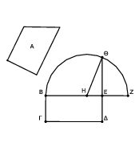
εἰ μὲν οὖν ἴση ἐστὶν ἡ ΒΕ τῇ ΕΔ, γεγονὸς ἂν εἴη τὸ ἐπιταχθέν. συνέσταται γὰρ τῷ Α εὐθυγράμμῳ ἴσον τετράγωνον τὸ ΒΔ·
εἰ δὲ οὔ, μία τῶν ΒΕ, ΕΔ μείζων ἐστίν. ἔστω μείζων ἡ ΒΕ, καὶ ἐκβεβλήσθω ἐπὶ τὸ Ζ, καὶ κείσθω τῇ ΕΔ ἴση ἡ ΕΖ, καὶ τετμήσθω ἡ ΒΖ δίχα κατὰ τὸ Η, καὶ κέντρῳ τῷ Η, διαστήματι δὲ ἑνὶ τῶν ΗΒ, ΗΖ ἡμικύκλιον γεγράφθω τὸ ΒΘΖ, καὶ ἐκβεβλήσθω ἡ ΔΕ ἐπὶ τὸ Θ, καὶ ἐπεζεύχθω ἡ ΗΘ.
᾿Επεὶ οὖν εὐθεῖα ἡ ΒΖ τέτμηται εἰς μὲν ἴσα κατὰ τὸ Η, εἰς δὲ ἄνισα κατὰ τὸ Ε, τὸ ἄρα ὑπὸ τῶν ΒΕ, ΕΖ περιεχόμενον ὀρθογώνιον μετὰ τοῦ ἀπὸ τῆς ΕΗ τετραγώνου ἴσον ἐστὶ τῷ ἀπὸ τῆς ΗΖ τετραγώνῳ. ἴση δὲ ἡ ΗΖ τῇ ΗΘ· τὸ ἄρα ὑπὸ τῶν ΒΕ, ΕΖ μετὰ τοῦ ἀπὸ τῆς ΗΕ ἴσον ἐστὶ τῷ ἀπὸ τῆς ΗΘ.
τῷ δὲ ἀπὸ τῆς ΗΘ ἴσα ἐστὶ τὰ ἀπὸ τῶν ΘΕ, ΕΗ τετράγωνα· τὸ ἄρα ὑπὸ τῶν ΒΕ, ΕΖ μετὰ τοῦ ἀπὸ ΗΕ ἴσα ἐστὶ τοῖς ἀπὸ τῶν ΘΕ, ΕΗ. κοινὸν ἀφῃρήσθω τὸ ἀπὸ τῆς ΗΕ τετράγωνον· λοιπὸν ἄρα τὸ ὑπὸ τῶν ΒΕ, ΕΖ περιεχόμενον ὄρθογώνιον ἴσον ἐστὶ τῷ ἀπὸ τῆς ΕΘ τετραγώνῳ.
ἀλλὰ τὸ ὑπὸ τῶν ΒΕ, ΕΖ τὸ ΒΔ ἐστιν· ἴση γὰρ ἡ ΕΖ τῇ ΕΔ· τὸ ἄρα ΒΔ παραλληλόγραμμον ἴσον ἐστὶ τῷ ἀπὸ τῆς ΘΕ τετραγώνῳ. ἴσον δὲ τὸ ΒΔ τῷ Α εὐθυγράμμῳ. καὶ τὸ Α ἄρα εὐθύγραμμον ἴσον ἐστὶ τῷ ἀπὸ τῆς ΕΘ ἀναγραφησομένῳ τετραγώνῳ.
Τῷ ἄρα δοθέντι εὐθυγράμμῳ τῷ Α ἴσον τετράγωνον συνέσταται τὸ ἀπὸ τῆς ΕΘ ἀναγραφησόμενον· ὅπερ ἔδει ποιῆσαι.